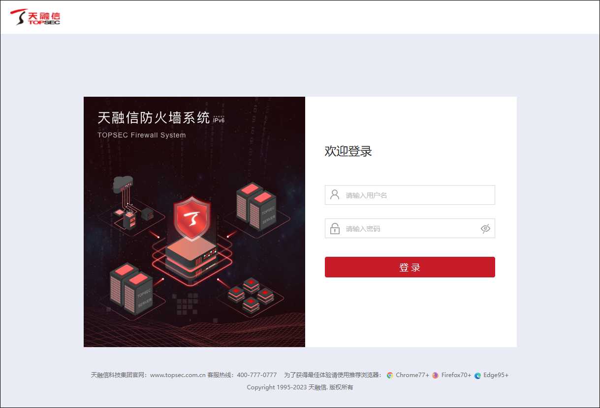
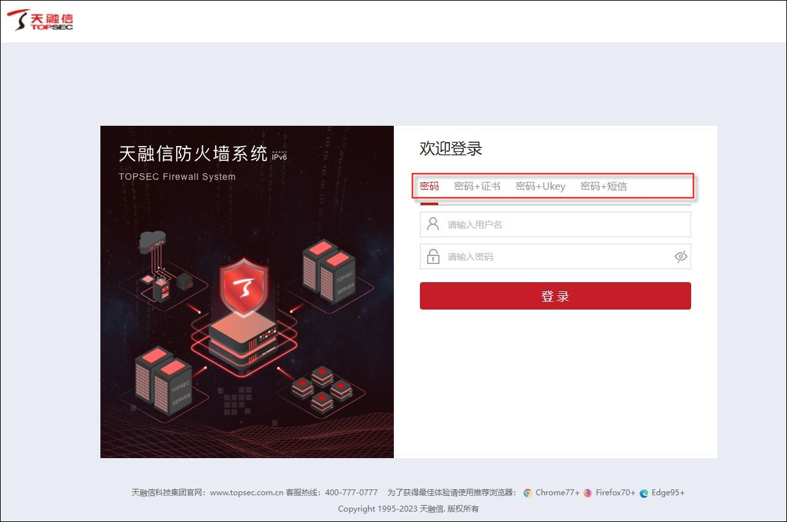
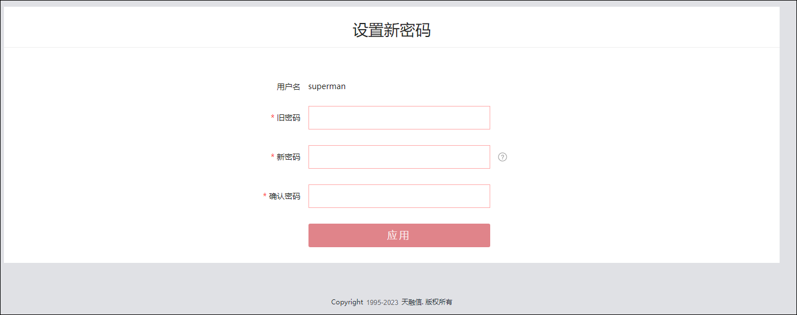

l登录前配置
初次通过浏览器登录NGFW，登录之前，需执行如下配置：
Ø将NGFW设备的feth0接口与本地管理主机直连。
Ø配置本地管理主机的IP地址为192.168.1.X/24（X取值范围为：1-253），确保本地管理主机的IP地址与NGFW的feth0接口IP处于同一网段（NGFW的feth0接口出厂配置为192.168.1.254/24）。
非初次登录NGFW，且管理员当前已对NGFW进行基础配置（本地管理主机访问NGFW路由可达、NGFW的“WEB管理服务”开启），无需以上操作，便可直接通过浏览器登录NGFW。
l登录系统
| 步骤1 | 在管理主机的浏览器地址栏中输入NGFW的管理URL（https://设备接口IP地址，例如：https://192.168.1.254），按<>，可进入登录界面，登录界面如下图所示。 |

|
²出厂配置登录界面如上图所示。如果管理员已对系统认证方式进行了修改，登录界面会显示相应认证方式，如下图所示。 |


| 步骤2 | 登录系统认证方式为“密码认证”（出厂配置），此时输入出厂用户名/密码（superman/talent），点击【登录】即可登录系统。为保证系统的安全性，登录系统后管理员可对管理员的认证方式进行修改（操作详见 账户管理 和 登录安全策略），修改管理员的认证方式后，管理员登录系统时，选择相应的认证方式，然后按要求配置认证信息，点击【登录】方可登录系统。 |
|
²在输入URL时要注意以“https://”作为协议类型，例如 https://192.168.1.254。 ²天融信防火墙系统对于用户名和密码大小写敏感。 ²管理主机的浏览器建议使用Chrome77、Firefox70、IE11以上版本。 |
为了保护系统安全，首次登录后会跳转到密码修改界面，如下图所示：

l按需求开启管理服务
| 步骤1 | 配置接口IP地址。选择 。选中某接口所在行，点击列表上方的『编辑』，在弹出的窗口中可配置接口IP地址。 |
| 步骤2 | 开启各种方式的管理服务。选择 ，可按需开启管理服务。 |
| 步骤3 | 配置本地管理主机访问NGFW的路由。选择 ，点击『添加』，在弹出的“添加”对话框中可配置路由。 |